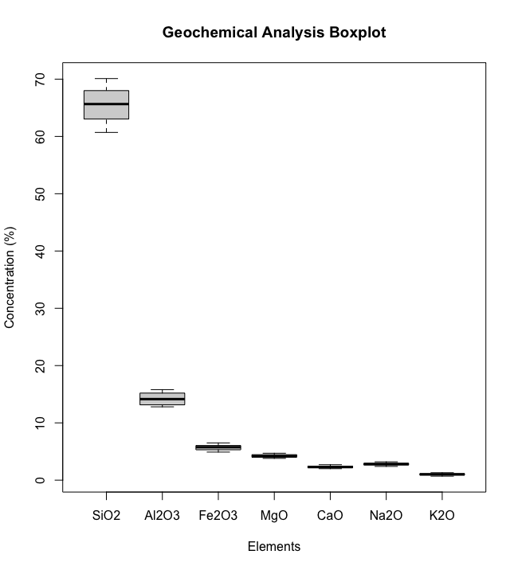
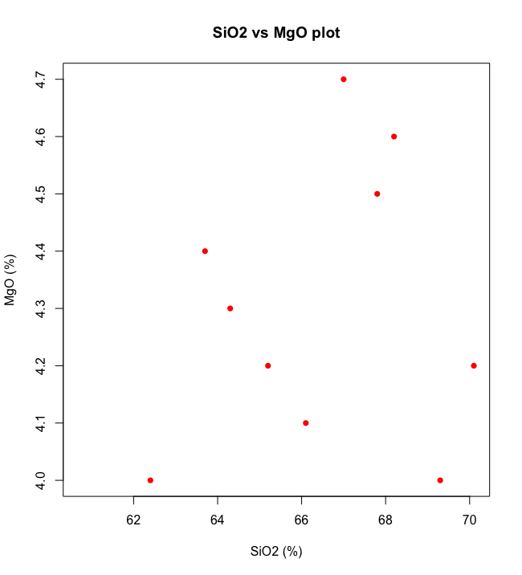
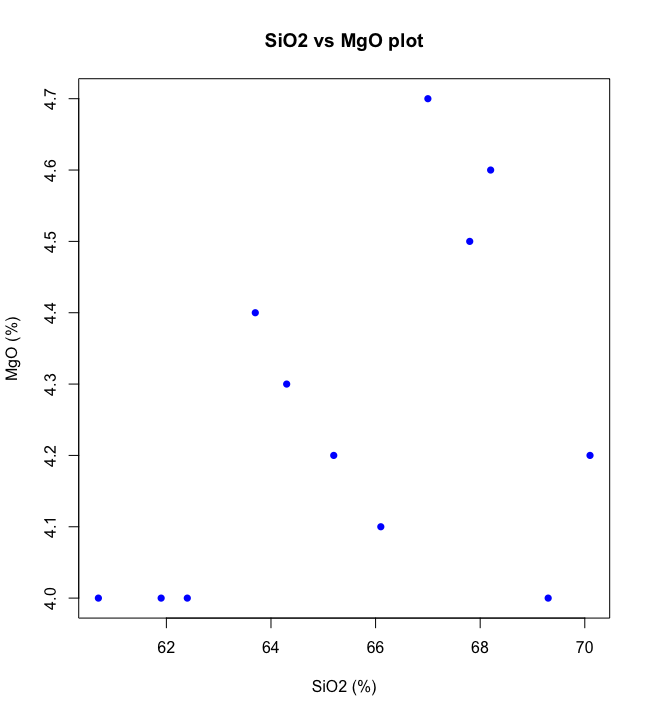

Replace NAs
Handling missing values in a data frame

Missing values?
In geochemical studies, the presence of non-detect (ND) values is a common occurrence. Non-detect values represent situations where the concentration of a particular substance (e.g., an element or compound) in a sample is below the detection limit of the analytical method or instrument being used. These values typically appear as "ND" or "<DL" (Below Detection Limit) in laboratory reports or in data tables.
The question is 'what to do in these cases?'
Framing the problem
- Detection Limits: Every analytical method or instrument has a limit below which it cannot reliably measure the concentration of a substance. This limit is referred to as the detection limit. It signifies the lowest concentration that the method can quantifiably detect.
- Censored Data: When a sample's concentration falls below the detection limit, the result is referred to as censored data. It means that the actual concentration is lower than what can be measured, but it is still present in the sample.
- Reporting ND Values: In analytical reports and datasets, non-detect values are often represented as "ND" or "<DL" to indicate that the substance was present but below the detection limit. For example, if the detection limit for a particular element is 0.1 ppm (parts per million), and a sample has a concentration of 0.05 ppm, it would be reported as "ND" because it's below the 0.1 ppm detection limit.
- Handling ND Values in Data Analysis: Non-detect values can pose challenges in data analysis because they represent a range of possible values below the detection limit. Common approaches to handling ND values include:
- Substitution Methods: Replace ND values with a specific value, such as half of the detection limit, to allow for statistical analysis. For example, if the detection limit is 0.1 ppm, ND values might be replaced with 0.05 ppm.
- Censoring: Keep ND values as they are and treat them as left-censored data. This involves using statistical methods designed for censored data, like survival analysis or maximum likelihood estimation.
- Data Transformation: Apply data transformation techniques, such as log transformation, to normalize the data while handling ND values.
- Non-parametric Methods: Use non-parametric statistical methods that do not assume a specific distribution for the data.
Handling non-detect values appropriately is essential in geochemical analysis to avoid bias in statistical results and to make meaningful interpretations of the data.
In R the ND values are commonly named NA (not available).It is better to clean the file before importing it to R. To replace NA values in a dataframe using only base R one can apply the is.na() function and subsetting the dataframe, using the bracketing [] approach.
Here's how you can do it for all columns and then for a specific columns:
Replace NA Values for All Columns:
To replace NA values with a specific value (e.g., 0) for all columns in a dataframe, use the is.na() function along with brackets.
# Replace NA values with 0 for all columns
your_dataframe[is.na(your_dataframe)] = 0Replace your_dataframe with the name of your dataframe and 0 with the value you want to use as a replacement.
Running example:
Suppose you have a data frame with 12 samples of the major chemical elements.
# Create a data frame with geochemical analysis data
geochem_analysis <- data.frame(
Sample_ID = 1:12, # Sample IDs from 1 to 12
SiO2 = c(65.2, 60.7, 67.8, 62.4, 64.3, 66.1, 61.9, 68.2, 63.7, 67.0, 69.3, 70.1),
Al2O3 = c(14.3, 15.5, 13.1, 15.8, 14.6, 14.0, 15.7, 13.0, 14.9, 13.5, 12.8, 13.2),
Fe2O3 = c(5.6, 6.3, 4.9, 6.1, 5.8, 5.7, 6.0, 5.0, 5.9, 5.2, 5.4, 6.5),
MgO = c(4.2,NA, 4.5, 4.0, 4.3, 4.1, NA , 4.6, 4.4, 4.7, 4.0, 4.2),
CaO = c(2.1, 2.3, 2.0, 2.2, 2.4, 2.3, 2.1, 2.2, 2.5, 2.3, 2.6, 2.7),
Na2O = c(3.0, 2.8, 2.9, 3.2, 2.7, 3.1, 2.6, 2.8, 2.5, 2.7,NA , 2.9),
K2O = c(0.8, 1.2, 1.0, 1.1, 1.0, 0.9, 1.3, 0.7, 1.1, 0.9, 1.2, 1.0)
)
The data in a table format is:
| Sample_ID | SiO2 | Al2O3 | Fe2O3 | MgO | CaO | Na2O | K2O |
|---|---|---|---|---|---|---|---|
| 1 | 65.2 | 14.3 | 5.6 | 4.2 | 2.1 | 3.0 | 0.8 |
| 2 | 60.7 | 15.5 | 6.3 | NA | 2.3 | 2.8 | 1.2 |
| 3 | 67.8 | 13.1 | 4.9 | 4.5 | 2.0 | 2.9 | 1.0 |
| 4 | 62.4 | 15.8 | 6.1 | 4.0 | 2.2 | 3.2 | 1.1 |
| 5 | 64.3 | 14.6 | 5.8 | 4.3 | 2.4 | 2.7 | 1.0 |
| 6 | 66.1 | 14.0 | 5.7 | 4.1 | 2.3 | 3.1 | 0.9 |
| 7 | 61.9 | 15.7 | 6.0 | NA | 2.1 | 2.6 | 1.3 |
| 8 | 68.2 | 13.0 | 5.0 | 4.6 | 2.2 | 2.8 | 0.7 |
| 9 | 63.7 | 14.9 | 5.9 | 4.4 | 2.5 | 2.5 | 1.1 |
| 10 | 67.0 | 13.5 | 5.2 | 4.7 | 2.3 | 2.7 | 0.9 |
| 11 | 69.3 | 12.8 | 5.4 | 4.0 | 2.6 | NA | 1.2 |
| 12 | 70.1 | 13.2 | 6.5 | 4.2 | 2.7 | 2.9 | 1.0 |
Notice that there are some samples that have NAs, the samples 2 and 7 for MgO and the sample 11 for Na2O.
To visualize the results a boxplot graphic is a useful tool.
To plot the values it is necessary to create a data frame with only the data and not the sample identifications, i.e. Sample_id first column.
For this a new data frame geochem_data is created.
# Remove Sample_ID column for boxplot
geochem_data <- geochem_analysis[, -1]
# Create a boxplot for each element
boxplot(geochem_data, main="Geochemical Analysis Boxplot",
xlab="Elements", ylab="Concentration (%)")The resulting plot is:
For this type of graphic the NA values are not relevant and therefore there is no visible problem.
However, when plotting a scatter XY graphic of SiO2 Vs MgO there are only 10 points plot as MgO has 2 missing values.
To solve this problem and have all the values plotted one should replace NA values by some value.
In a vey simplified approach a zero value could replace the NA's
the code for this replacement should be:
# Replace NA values with 0 for all columns
geochem_data[is.na(geochem_data)] = 0
plot(geochem_data$SiO2, geochem_data$MgO,
main="SiO2 vs MgO plot",
pch=16, col="blue",
xlab="SiO2 (%)", ylab="MgO (%)")Not a very elegant solution...
Let us suppose that the detection limits are for LODMgO = 4% and for LODNa2O = 2.5%
A better solution should be to replace the NAs by these values.
In this case the NA's should be replaced for each individual column.
The code look like:
# Create a data frame with geochemical analysis data
geochem_analysis <- data.frame(
Sample_ID = 1:12, # Sample IDs from 1 to 12
SiO2 = c(65.2, 60.7, 67.8, 62.4, 64.3, 66.1, 61.9, 68.2, 63.7, 67.0, 69.3, 70.1),
Al2O3 = c(14.3, 15.5, 13.1, 15.8, 14.6, 14.0, 15.7, 13.0, 14.9, 13.5, 12.8, 13.2),
Fe2O3 = c(5.6, 6.3, 4.9, 6.1, 5.8, 5.7, 6.0, 5.0, 5.9, 5.2, 5.4, 6.5),
MgO = c(4.2,NA, 4.5, 4.0, 4.3, 4.1, NA , 4.6, 4.4, 4.7, 4.0, 4.2),
CaO = c(2.1, 2.3, 2.0, 2.2, 2.4, 2.3, 2.1, 2.2, 2.5, 2.3, 2.6, 2.7),
Na2O = c(3.0, 2.8, 2.9, 3.2, 2.7, 3.1, 2.6, 2.8, 2.5, 2.7,NA , 2.9),
K2O = c(0.8, 1.2, 1.0, 1.1, 1.0, 0.9, 1.3, 0.7, 1.1, 0.9, 1.2, 1.0)
)
# Remove Sample_ID column for boxplot
geochem_data <- geochem_analysis[, -1]
# Replace NA values with LOD for MgO column
geochem_data$MgO[ is.na(geochem_data$MgO)] = 4
# Replace NA values with LOD for Na2O column
geochem_data$MgO[ is.na(geochem_data$MgO)] = 2.5
# Verify the MgO results
plot(geochem_data$SiO2, geochem_data$MgO,
main="SiO2 vs MgO plot",
pch=16, col="blue",
xlab="SiO2 (%)", ylab="MgO (%)")It looks better like this, and the plot is.
Yeah! It is more realistic.
As an exercise you can try to replace the NA's by the mean of the column or by any other value that you consider relevant.
Related
Using zCompositions to replace missing data.
References
Filzmoser, P., Hron, K., Templ, M., 2018. Applied Compositional Data Analysis. With Worked Examples in R. Springer, Switzerland.
van den Boogaart, K.G., Tolosana-Delgado, R., 2013, Analyzing Compositional Data with R. Springer-Verlag, Berlin, Germany.
Palarea-Albaladejo, J., Martin-Fernandez, J.A., 2013. Values below detection limit in compositional chemical data. Analytica Chimica Acta 764: 32-43.